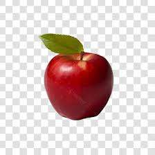
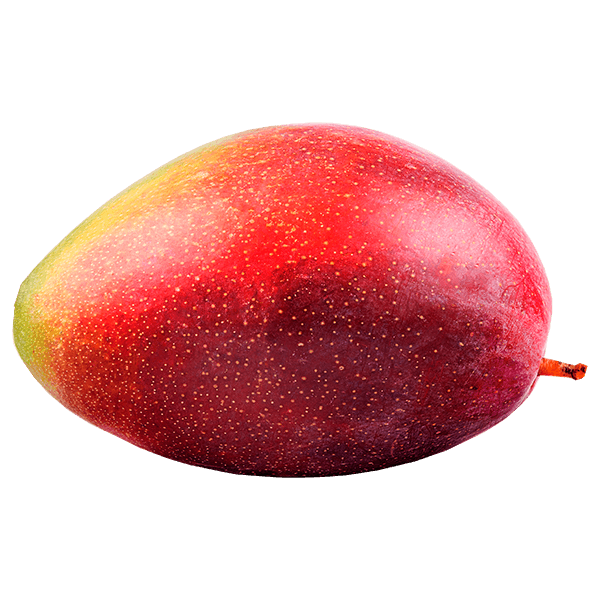
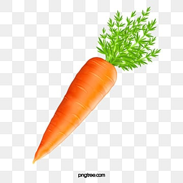
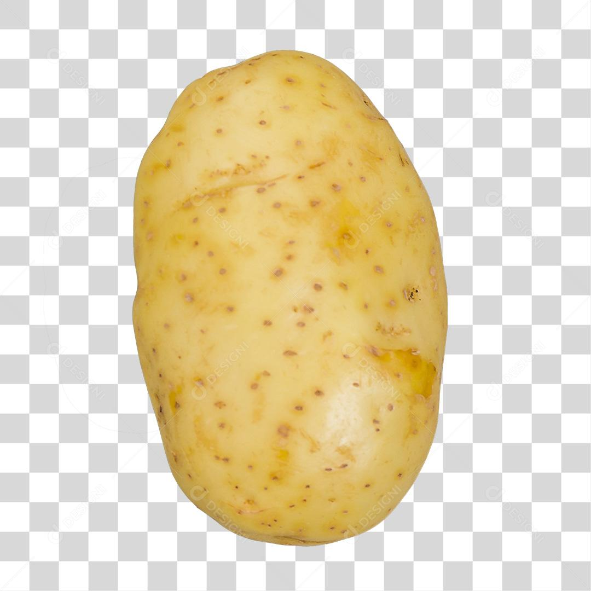

Frutas e Verduras
Maçã
Descrição: Fruta fresca, ideal para lanches e sobremesas.
Preço: R$ 3,99 / kg
Manga
Descrição: Doce e suculenta, perfeita para sucos e saladas.
Preço: R$ 4,49 / kg
Cenoura
Descrição: Rica em vitaminas, ótima para cozidos e saladas.
Preço: R$ 2,89 / kg
Batata
Descrição: Versátil e saborosa, ideal para diversas receitas.
Preço: R$ 2,99 / kg